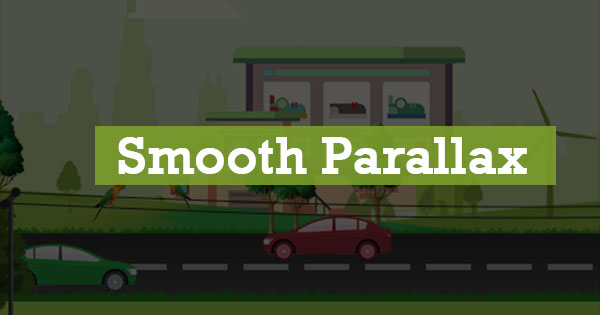

<mat-card>
    
    <mat-card-content>
        <ul class="intractions">
            <li><i class="material-icons">sentiment_satisfied_alt</i>25</li>
            <li><i class="material-icons">save_alt</i>25</li>
            <li><i class="material-icons">favorite</i>25</li>
            <li class="share"><i class="material-icons">share</i>Share</li>
            <li><i class="material-icons">schedule</i>about 2 years ago</li>
        </ul>
        <h2>Smooth parallex animation with pure javascript</h2>
        <p>Every slide should have position="absolute" and z-index has to initialize according to depth.</p>
    </mat-card-content>
</mat-card>